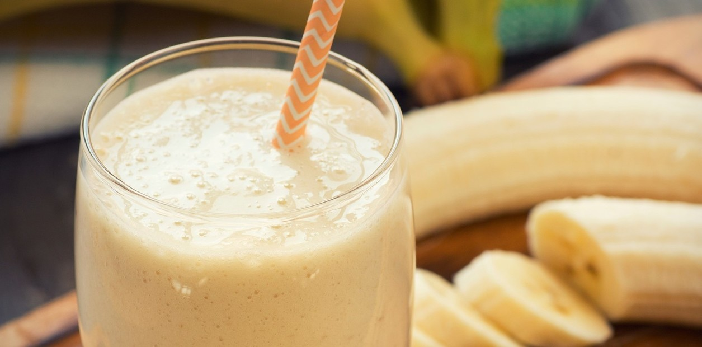

LICUADO DE BANANA

Ingredientes:
- 2 tazas de leche
- 1 banana de tamaño mediado
- 1 taza de cubos de hielo
- 2 cuacharadas de azúcar
- 1 cucharadita de vainilla
Preparación:
- Picar la banana en trozos pequeños.
- Colocar la leche, el azúcar y la banana picada en la licuadora.
- Prender la licuadora por unos segundos hasta que se integre.
- Por último, colocar la cucharadita de vainilla y los cubos de hielo.
- Licuar hasta lograr la consistencia deseada.
- Servir.